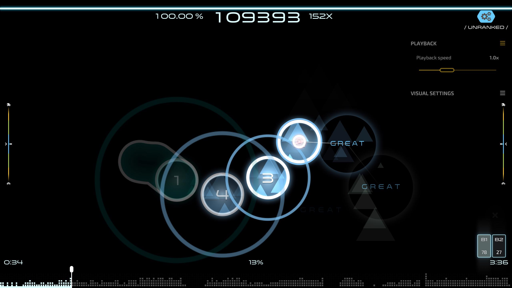

Journal Entry Four Revision
I often turn to music when I am looking to relax. Except, what I do isn't always simply listening to music or even
performing music. Often times, it has been through a particular rhythm game osu!.
Put simply, osu! is a free-to-win rhythm game about clicking circles which appear onscreen in time with the music.
The game is typically played on computer (although osu! can be ported to other devices) with one of three peripheral
configurations: mouse and keyboard, graphics tablet and keyboard, or touchscreen. The ‘playable’ songs, referred to
as maps, are created by members of the community then reviewed by designated members. The maps become freely available
for download on the official site. This results in both a massive number of maps but also a wide variety of music.
In late 2014, I discovered osu! and immediately became interested. While osu! has a significant level of skill
expression, the learning curve is relatively smooth because of the wide range of available difficulties and gradual
progression. I found that osu! was an easy game to play for a bit then take a break. My sessions with osu! rarely
spanned over an hour, and I often had a sense of accomplishment at the end, having passed a new map or obtained a
better score.
With a global mapping community, I was exposed to a variety of music, much of which included music from Japan and
South Korea. Furthermore, osu! lead me to the Monstercat and MrSuicideSheep labels on YouTube. I enjoyed playing songs
I knew, osu! had many popular songs, and discovering entirely new songs. On a related note, the osu! community
generally well versed in anime (op’s and ed’s are frequently mapped), so osu! also led me to anime.
After playing osu! I have noticed that way I listen to music has changed. When I listen to music, in my mind I can see
the notes on the screen for even maps I've never played. The notes not only fall in time with the music, but also match
the song's intensity, speed, fluidity, and instrumentation. It offers an escape. With this, I've also come to
appreciate music that doesn't have lyrics more.

For me osu! holds a separation from reality. While osu! has a competitive scene, this hasn't been the aspect I've
focused on. Meaning, osu! is pretty low stress, even if it sometimes gets me pumped from the action... Writing this
has got me excited about clicking circles!